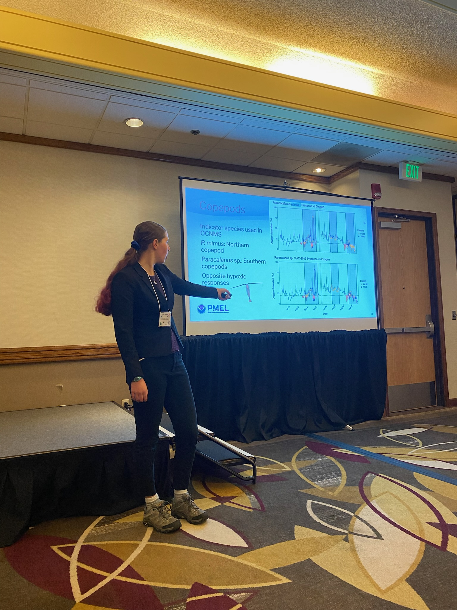
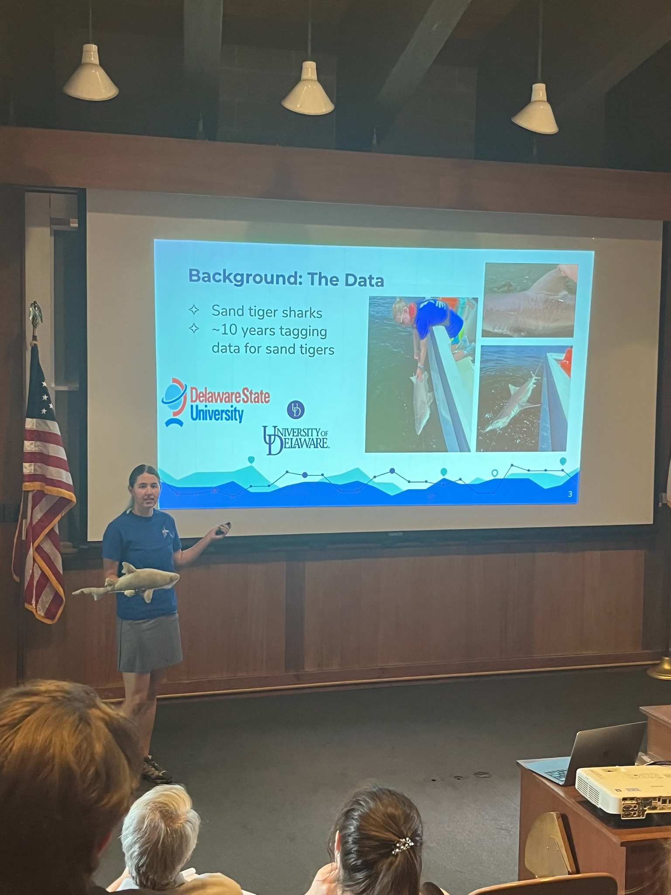
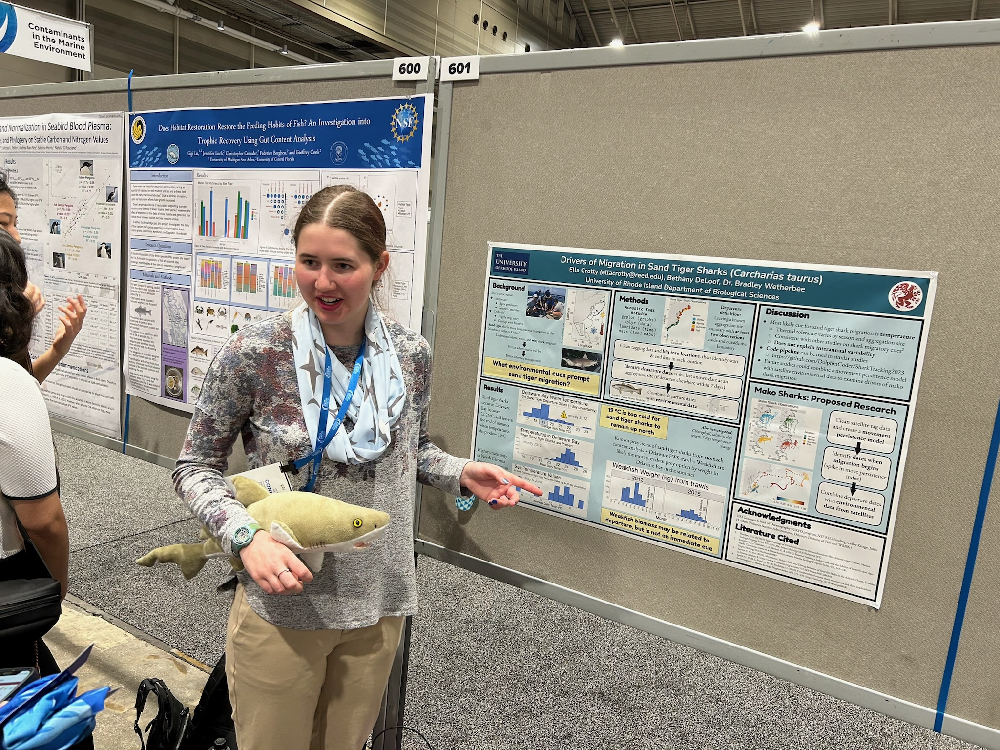

<!DOCTYPE html>
<html>
  <head>
    <title>Ella Crotty</title>
    <link href="style.css" rel="stylesheet">
    <link rel="preconnect" href="https://fonts.googleapis.com">
    <link rel="preconnect" href="https://fonts.gstatic.com" crossorigin>
    <link rel="preconnect" href="https://fonts.googleapis.com">
<link rel="preconnect" href="https://fonts.gstatic.com" crossorigin>
<link href="https://fonts.googleapis.com/css2?family=Crimson+Text:ital,wght@0,400;0,600;0,700;1,400;1,600;1,700&display=swap" rel="stylesheet">
    <meta name="viewport" content="width=device-width, initial-scale=1.0">
  </head>
</html>

<body> <!-- stuff in here is displayed -->

  <!--<a href="#id-of-element-to-link-to">Take me to a different part of the page</a>-->
  <header>
        <h1 style='text-align: center;'>Ella Crotty</h1>

    <nav>
      <container>
        <a margin-left: 0px;' href="./index.html"><strong>Home</strong></a>
        <a margin-left: 0px;' href="./CV.html"><strong>CV</strong></a>
        <a margin-left: 0px;' href="./PublicationsPresentations.html"><strong>Publications & Presentations</strong></a>
        <a margin-left: 0px;' href="./Research.html"><strong>Research</strong></a>
        <a margin-left: 0px;' href="./TeachingOutreach.html"><strong>Teaching & Outreach</strong></a>
        <a margin-left: 0px;' href="./Illustration.html"><strong>Illustration</strong></a>
      </container>
    </nav>
  </header>

  <main>
    <h1>Research Experience</h1>
    <p><strong>Sep 2024-Apr 2025 |</strong> Reed College Senior Thesis</p>
    <p>My undergraduate senior thesis was a continuation of my Hollings internship (see below), focused on copepods. I used a dataset
    of environmental DNA species identificartions and paired environmental data to investigate the susceptibility of different species
    of copepods to hypoxia.</p>
    <embed src="thesis.pdf" width="700" height="500" type="application/pdf">
    
    <p><strong>Jun-Aug 2024 | NOAA Ernest F. Hollings Program Intern, Pacific Marine Environmental Laboratory (PMEL)</strong></p>
    <p>Participated in a 10-week NOAA Hollings Program internship in the Ocean Molecular Ecology lab at PMEL. Combined data 
    from an automated environmental DNA (eDNA) sampler with oceanographic data from a mooring at the same location to investigate
    the relationship between species presence and oxygen saturation. Participated in field eDNA sampling and filtration as well 
    as sampler cleaning and preparation. Presented results to PMEL and the NOAA Ernest F. Hollings Program Symposium. I wrote about my research
    in <a href="https://www.pmel.noaa.gov/ocean-molecular-ecology/news-story/investigating-effects-seasonal-hypoxia-marine-species-using-environmental-dna">
      this blog post.</a></p>

    <p>I presented this talk at the Western Society of Naturalists 2024 conference:</p>
    <embed src="WSN24 Presentation.pdf" width="1000" height="700" type="application/pdf">
    

    <p>And this poster at the American Geophysical Union 2024 (virtual due to illness) and the Reed College Summer Research Symposium:</p>
    <embed src="Crotty.Eleanor.2024PosterSession.pdf" width="1000" height="700" type="application/pdf">
    
    <p><strong>Jun-Aug 2023 | REU Intern, Wetherbee Lab at University of Rhode Island</strong></p>
    <p>Participated in the URI Graduate School of Oceanography SURFO program as an intern, attending career development 
    and science writing workshops. Analyzed data from a decade of acoustic and satellite telemetry shark tagging in 
    order to identify the environmental cues that lead sand tiger sharks to leave their aggregation sites on the US East Coast in 
    order to identify potential explanations for shark migration patterns. Completed a final write-up and presentation.</p>
    <p>I presented a talk at the REU symposium, and this poster at the Ocean Sciences Meeting 2023:</p>
    <embed src="OSM24_Poster_ResearchGate.pdf" width="1000" height="700" type="application/pdf">
    
    
      
    <p><strong>May-Aug 2022 | Lab Intern, Reyns Lab at University of San Diego</strong></p>
    <p>Shadowed a graduate student working to measure seasonal growth of <italic>Amathia verticillata</italic> and assisted her with YSI probe 
    sampling, collecting <italic>A. verticillata</italic> samples, and data entry. Conducted an independent research project to quantify 
    reproduction in the barnacle <italic>Chthamalus fissus</italic> on the southern California coast. Measured barnacle diameters & weights 
    and counted eggs and parasites, then conducted data analysis and concluded that barnacle mass varies seasonally, barnacles 
    with greater mass have larger broods, and the connection between season, lunar phase, and brood size needs to be investigated further.</p>
    <p>I presented this poster at the Western Society of Naturalists 2022 conference:</p>
    <embed src="Ella_Crotty_WSN_Poster_2022.pdf" width="1000" height="700" type="application/pdf">
  </main>
</body>
